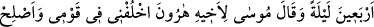
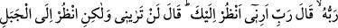

MÛSÂ ALEYHİSSELÂM’IN
ALLAH TEÂLÂ’YI
GÖRMEK İSTEMESİ
142. (Bana ibadet etmesi için) Musa’ya otuz gece vade verdik ve ona on gece
daha ilâve ettik; böylece Rabbinin tayin ettiği vakit kırk geceyi buldu. Musa,
kardeşi Harun’a dedi ki: Kavminin içinde benim yerime geç, onları ıslah et,
bozguncuların yoluna uyma.
143. Musa tayin ettiğimiz vakitte (Tûr’a) gelip de Rabbi onunla konuşunca
“Rabbim! Bana (kendini) göster; seni göreyim!” dedi. (Rabbi): “Sen beni asla
göremezsin. Fakat şu dağa bak, eğer o yerinde durabilirse sen de beni göreceksin!”
buyurdu. Rabbi o dağa tecellî edince onu paramparça etti, Musa da baygın düştü.
Ayılınca dedi ki: Seni noksan sıfatlardan tenzih ederim, sana tevbe ettim. Ben
inananların ilkiyim.
“Mûsâ ile otuz gece” tamamlaması veya beklemesi için “sözleştik.” Sözleşme
anlamındaki va‘d; meydana gelmeden önce birisine bir menfaatin geleceğini haber
vermektir. “Mûsâ” kelimesi, Arapça değildir. Herhangi bir kökten türememiştir. “Demir
ustura” mânâsındaki “mûsâ” ise tıraş etmek mânâsına gelen “evsâ” fiilinden
gelmektedir. Bunun “böbürlenerek yürümek” anlamını taşıyan “mâse” fiilinden türemiş
bir masdar olduğu da söylenmiştir. Bu izaha göre traş esnasında çokça sağa sola hareket
ettirildiği için traş usturasına, “mûsâ” denmiştir.
Otuz gece, ve gündüz demektir. Çünkü Arabî ayların hesaplanmasında hilâlin
görülmesi esastır. Hilal ise gece görülür. Böylece Cenâb-ı Hak, târihi geceye
bağlamıştır.
Şeyhzâde demiştir ki: “Va’dedilen şeyin, va’dedenin bir fiili olması gerekir. Halbuki